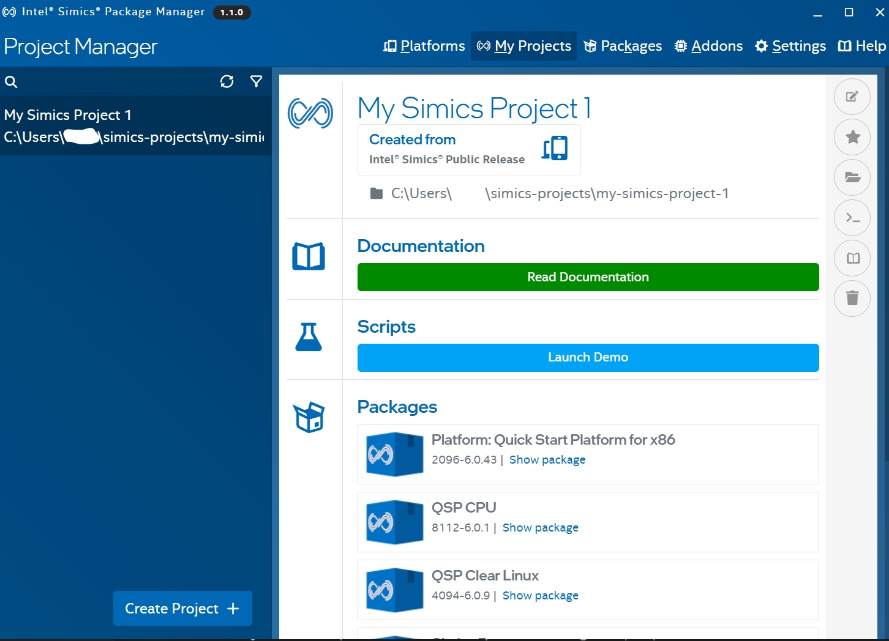
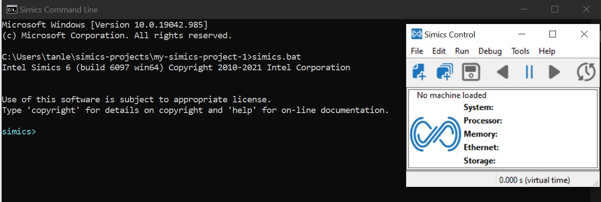
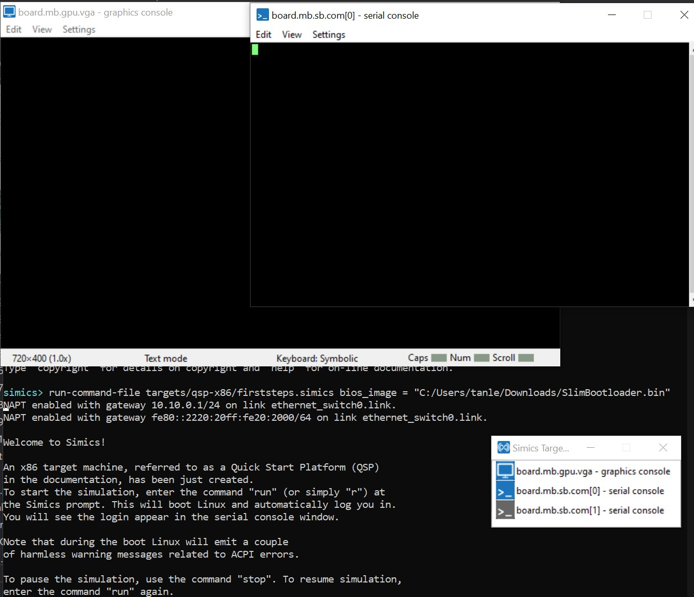
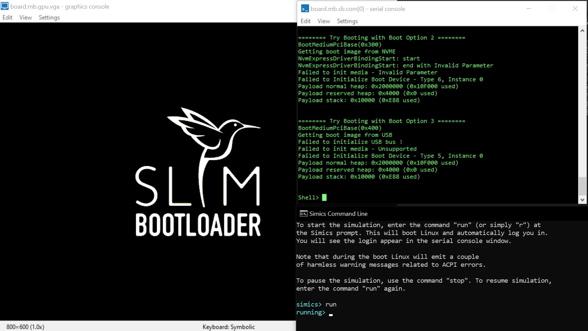

Simics® QSP Virtual Platform
What is Simics®?
The Simics simulator is the functional virtual platform technology used in Intel® Integrated Simulation Infrastructure with Modeling (Intel® ISIM). The Simics simulator has been designed to let virtual platforms run target binaries in a fast, deterministic, and controllable way. This provides an ideal environment for early software development and debugging, analysis, tracing, and instrumentation of software running on the platform.
Here is an interesting article for further reading about Simics: Simics® 6 A Deeper Look at How Software Uses Hardware
Note
In this guide, we will focus on how to boot up on Simics Quick-Start Platform (QSP).
The QSP is a simple model of a standard PC, and is part of the Simics base product.
Setting up Simics® Simulator
Please head over to this link to understand and setup Simics® Simulator:
Simics® Simulator Public Release
Please refer to the guide bwlow to get your Simics Simulator setting up!
Simics® Simulator Installation and Get Started
Here is a snapshot of Simics Simulator after setting up:
Building SBL for Simics QSP
Time to get ready with SBL!
Note
Before trying on SBL, you are strongly recommended to at least go through the Tutorial section in Simics Simulator to get yourself familiarized with it.
Please refer to Get Started section here
To build SBL for Simics QSP (it is the same image as QEMU, SBL will auto detect the platform at runtime):
python BuildLoader.py build qemu
Note
QSP SBL shares the same image as QEMU SBL, SBL will auto detect the platform at runtime via Host Bridge Device ID.
The output images are generated under Outputs/qemu/SlimBootloader.bin directory.
Note
QSP SBL does not require stitching the SBL into an IFWI.
Boot to Shell on QSP Simics
Start Simics Simulator. You should be able to see the Simics Control Panel pop up:
Now proceed to load SlimBootloader.bin using Simics CLI method (in Simics terminal):
simics> run-command-file targets/qsp-x86/firststeps.simics bios_image = "/home/(SlimBootloader.bin path)"
A graphics console and a serial console will pop up:
Then ‘turn on’ the platform:
simics> run
Booted to SBL Shell!:
A snapshot of Console outputs:
============= Intel Slim Bootloader STAGE1A =============
SBID: SB_QEMU
ISVN: 001
IVER: 000.005.001.001.00581
SVER: 8BB52DAACA47D50A
FDBG: BLD(D IA32) FSP(R)
FSPV: ID($QEMFSP$) REV(00001000)
Loader global data @ 0x00001D44
Run STAGE1A @ 0x00070000
Load STAGE1B @ 0x00040000
HASH verification for usage (0x00000001) with Hash Alg (0x2): Success
============= Intel Slim Bootloader STAGE1B =============
Host Bridge Device ID:0x3400
Board ID:0x2 - Loading Simics QSP!
Loading Component KEYH:_HS_
Registering container KEYH
HASH verification for usage (0x00000100) with Hash Alg (0x2): Success
SignType (0x2) SignSize (0x180) SignHashAlg (0x2)
RSA verification for usage (0x00000100): Success
HASH verification for usage (0x00000000) with Hash Alg (0x2): Success
Append public key hash into store: Success